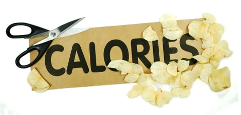

Si nourrir est un besoin , svoir manger est un art
transformation
La transformation des calories en kilos-joules(kj) est une version courante utilisée généralement dans le domaine de la nutrition . Les kilos-joules(kj) est une unité pour mesurer l'énérgie a l'échélle international car la mesure en kilos-calories (kcal) deviennet plus ancienne

transformant les calories de kilos-calories en kilos-joules :
les calories en kcal:
transformation en kj:
click